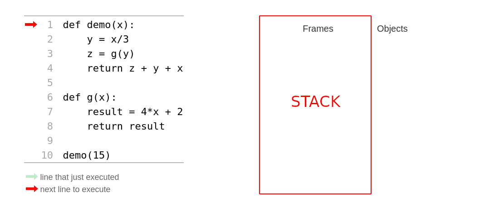
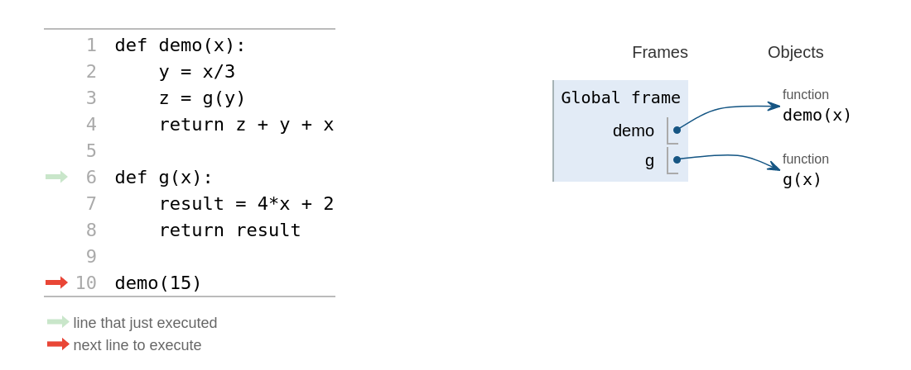
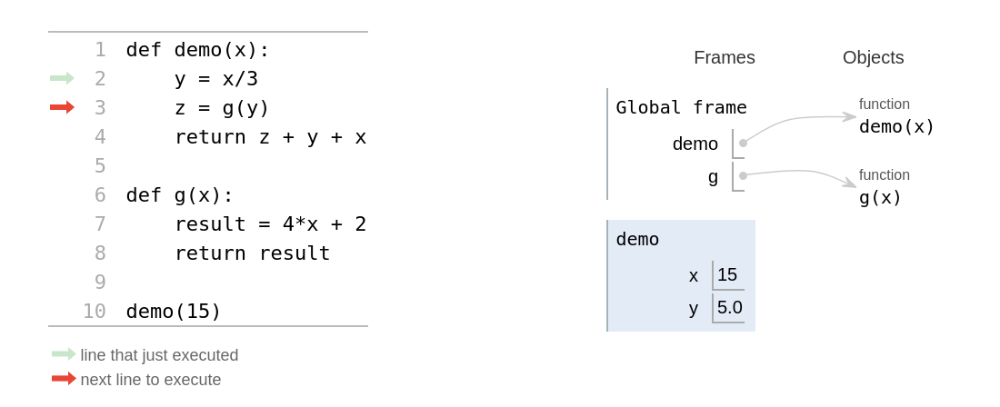
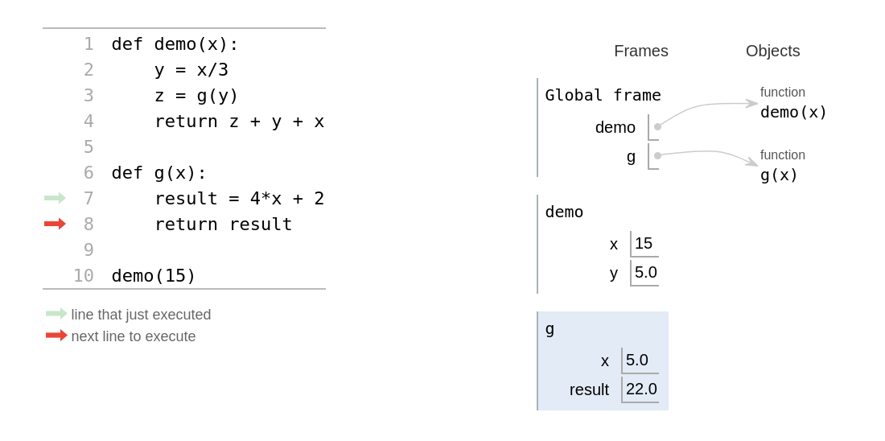
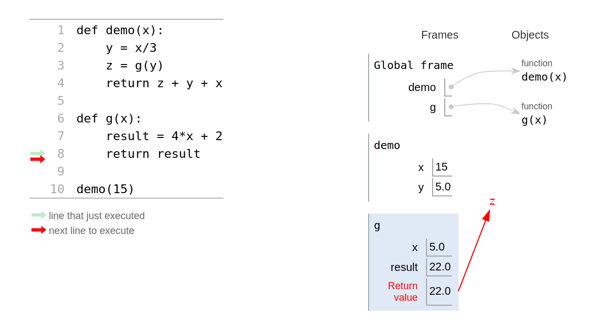
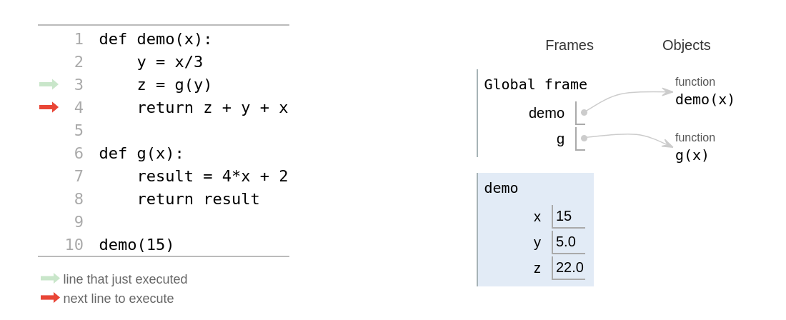
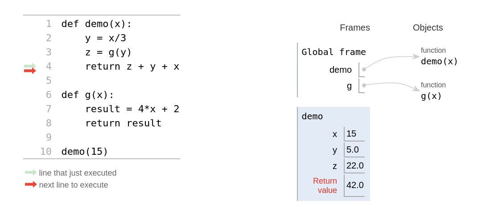

Functie calls#
Quiz#
Vraag#
Functies kunnen andere functies aanroepen!
def demo(x):
y = x / 3
z = g(y)
return z + y + x
def g(x):
result = 4*x + 2
return result
Wat is het resultaat van demo(15)?
Probeer regel voor regel het programma zelf te volgen om tot het antwoord te komen!
Bedenk dat demo pas een antwoord (een returnwaarde) kan geven nadat het een antwoord van g heeft ontvangen. Hier onstaat dus een kleine wachtrij, waar de ene functie op de ander moet wachten voordat het weer verder kan. (book) Hoe deze wachtrij in een computer werkt ga je zo zien wanneer we het gaan hebben over de stack.
Antwoord#
42.0
Hoe functies werken#
Hoe functies worden uitgevoerd: ze stapelen!
Python gebruikt speciaal deel van het geheugen dat de stack wordt genoemd waar het voor elke functie de variabelen een bijbehorende waarden in een frame zet (een stack frame). Op deze manier stapelen de frames zich op in de stack, traditioneel van onderen naar boven (onhandig als het om een stapel borden zou gaan!).

Je herkent hier de vraag van de quiz die we stap voor stap gaan doorlopen. Rechts van de code zie je de stack waar de frames worden geplaatst.

Het programma is nu ingelezen door Python en het eerste (algemene) frame is gezet, dit zijn de namen van de functies (dit zijn uiteindelijk ook variabelen) en een verwijzing naar waar de functies in het geheugen zijn opgeslagen. Dit is overigens een meer algemeen type geheugen dat de heap wordt genoemd. Functies moeten eerst geladen zijn voordat ze aangeroepen kunnen worden. Volgorde is dus belangrijk!

De frame voor de aanroep van demo is nu toegevoegd met de variabelen x (de waarde die als parameter is meegegeven) en y. Maar wat nu te doen met de variabele z? De waarde van z is pas bekend als de functie g(y) een resultaat teruggeeft … Python plaatst nu een nieuw frame op de stack van precies deze aanroep.

In dit derde frame worden ook de variabelen gezet die horen bij de aanroep van g(5.0) en het resultaat zal worden teruggegeven.

z is nog niet zichtbaar in het tweede frame (voor de duidelijkheid is dit weggelaten) maar het is er zeker wel als een verwijzing aanwezig naar het de returnwaarde van het volgende frame!

Het resultaat van het derde frame wordt gezet als waarde van z van het tweede frame en het derde frame wordt vervolgens van de stack verwijderd.

Tot slot geeft het tweede frame de returnwaarde terug aan het eerste frame en zal het vervolgens ook van de stack worden verwijderd. Het programma is nu beeindigd en wordt ook het eerste frame van de stack verwijderd zodat we weer terug zijn bij de beginsituatie.
Let op, je ziet dat variabele x type int en y en z type float (decimale getallen) zijn. Python zal altijd kiezen voor het type met de hoogste precisie als type voor het resultaat als het gaat om numerieke waarden (in dit geval de optelling van verschillende typen).
Functies kunnen gebruikt worden om code overzichtelijker te maken. Daarnaast zijn funcies herbruikbaar. Ze kunnen zo vaak als we willen aangeroepem worden en zelft hergebruikt worden in andere programma’s
Een belangrijk functie om code overzichtelijk te houden is de main functie. Onthoud dat een functie eerst geladen moet worden voordat het uitgevoerd kan worden.
flipside("automaat")
flipside("huiswerk")
flipside("studiemaatje")
def flipside(s):
""" flipside(s): spiegel s!
input s: een string
"""
x = len(s) // 2
return s[x:] + s[:x]
Bovenstaande code gaat dus niet werken, gezien de functie aanroepen worden gedaan voordat de functie is gedeclareerd. De functie is dus nog niet geladen in het geheugen. Dit geeft een zogenaamde NameError.
NameError name 'flipside' is not defined
Deze error krijg je ook als je probeert een variabele te gebruiken dat nog niet bestaat.
def flipside(s):
""" flipside(s): spiegel s!
input s: een string
"""
x = len(s) // 2
return s[x:] + s[:x]
print(flipside("automaat"))
print(flipside("huiswerk"))
print(flipside("studiemaatje"))
De functie aanroep moet dus onder de functie zelf staan. Dit geeft wel het nadeel dat als je een heel lang programma hebt met meerdere functies dat de start van het programma helemaal onderaan komt te staan. Dit is niet prettig, daarom gebruiken veel python programmeurs een zogenaamde main functie die helemaal bovenaan komt te staan. In de main functie wordt het programma aangestuurd.
def main():
print(flipside("automaat"))
print(flipside("huiswerk"))
print(flipside("studiemaatje"))
def flipside(s):
""" flipside(s): spiegel s!
input s: een string
"""
x = len(s) // 2
return s[x:] + s[:x]
main()
Alle functies worden dus eerst geladen, daarna wordt de main functie aangeroepen. De main functie zorgt er voor dat de juiste functies worden aangeroepen en dat het gewenste resultaat wordt geprint.
Assertions#
Inplaats van zelf de antwoorden te controleren kunnen we Python de antwoorden laten checken. Dit kunnen we doen met behulp van assertions.
Voeg assert statements toe, waar assert een aanname betekent. Bijvoorbeeld, lees
assert flipside('huiswerk') == 'werkhuis'
als “neem aan dat het resultaat van de aanroep flipside('huiswerk') gelijk is aan de string 'werkhuis'”. Als de aanname fout is (en het verwachte antwoord dus niet klopt) dan geeft Python dit aan. Als er geen fouten zijn meld Python niks.
def main():
assert flipside('huiswerk') == 'werkhuis'
assert flipside('automaat') == 'maatauto'
assert flipside('studiemaatje') == 'maatjestudie'
def flipside(s):
""" flipside(s): spiegel s!
input s: een string
"""
x = len(s) // 2
return s[x:] + s[:x]
main()
Opdracht 1#
def main():
"""
Main functie. Roept de andere functies op om hun werk te doen.
"""
x = blaat(5) + blaat(3)
print(x)
def testing():
"""
Test functie. Hier staan alle assertions om de functies te testen.
"""
def blaat(x):
l = list(range(x))
return sum(l)
main()
testing()
a. Wat doet de functie blaat?
b. Wat is de ouput van dit programma?
c. Gebruik de Python Tutor om je antwoord van a en b te controleren.
Opdracht 2#
a. Kopieer onderstaande code over naar een bestand genaamd ‘wk3wc2.py’
import time
from turtle import *
from random import *
def main():
"""
Main functie. Roept de andere functies op om hun werk te doen.
"""
tri()
done() # tell turtle the drawing is done.
def testing():
"""
Test functie. Hier staan alle assertions om de functies te testen.
"""
def tri():
"""Draws 100-pixel sides of an equilateral triangle.
"""
width(5) # width of the line to draw
clr = choice(['darkgreen', 'red', 'blue']) #choose a random color
color(clr) # set the color of the line
shape('turtle') # set the shape of the pencil
dot(10, 'red') # set the endpoints of the lines
forward(100) #move forward
left(120) #turn 120 degrees left
forward(100) #move forward
left(120) #turn 120 degrees left
forward(100) #move forward
left(120) #turn 120 degrees left
main()
testing()
b. Draai het programma. Als alles goed gaat wordt er in een nieuw scherm een driehoek getekend.
c. Pas de functie tri() aan zodat het een parameter accepteert dat de lengte van zijdes van de driehoek aangeeft. Vergeet niet de docstring aan te passen.
d. Gegeven de functie triRec()
def triRec():
"""Draws 100-pixel sides of an equilateral triangle.
"""
width(5) # width of the line to draw
clr = choice(['darkgreen', 'red', 'blue']) #choose a color
color(clr) # set the color of the line
shape('turtle') # set the shape of the pencil
dot(10, 'red') # set the endpoints of the lines
forward(100) #move forward
left(120) #turn 120 degrees left
triRec()
Deze functie roept zichzelf op aan het einde. Voorspel wat er gebeurt als je deze functie zal aanroepen.
e. Voeg de functie toe aan het bestand en pas de main functie aan zodat hij wordt aangeroepen. Check of je voorspelling bij g. juist was.
Opdracht 3#
a. Voorspel wat onderstaande programma zal doen als het uitgevoerd wordt.
def test(n):
print(n)
test(n-1)
test(5)
b. Open de Python Tutor en kopieer het programma. Test vervolgens of je voorspelling bij a. juist was door stap voor stap door het programma te lopen.
c. Voorspel wat onderstaande programma zal doen als het uitgevoerd wordt.
def test(n):
print(n)
if n == 0:
return
test(n-1)
test(5)
d. Herstart de Python Tutor en kopieer het programma. Test vervolgens of je voorspelling bij c. juist was door stap voor stap door het programma te lopen.
In opdracht 3 heb je je eerste recursieve programma geschreven. (book)
Recursie volgens wikipedia:

Google geeft een goed voorbeeld van oneindige recursie. Hoe vaak ga je op de suggestie (“Bedoelde je: …”) klikken?

Dit zal waarschijnlijk het meest bekende voorbeeld zijn van een oneindige recursie, ook wel bekend als het Droste effect.

Ergens moet de recursie stoppen en hebben we iets van een noodstop (of noodzakelijke stop) nodig, het moment dat een recursieve stap niet meer mogelijk is! Dit wordt ook wel de base case genoemd.
In opdracht 3 was de basecase if n == 0 Met andere woorden, als de counter 0 bereikt willen we dat de recursie stopt. De return statement zorgt ervoor dat de functie stopt en dat het dus zichzelf niet meer kan aanroepen.
def test(n):
print(n)
if n == 0:
return
test(n-1)
test(5)